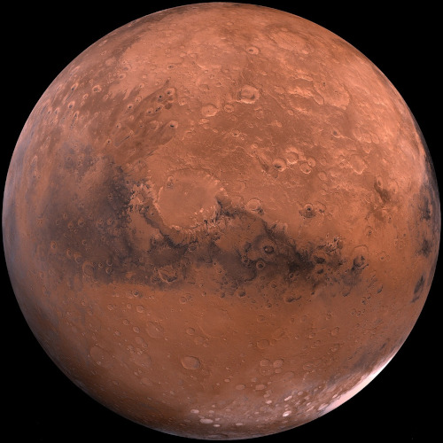

8 little planets going 'round the Sun
Could these little planets be having much fun? 8 little planets with the Sun at the center. Does each one wish it were a little bit better?
Eight Little Planets

- 
- Pale blue Earth should be filled with strife. It must be hard being home to all this life. But the 3rd little planet doesn't feel tense. It is quite proud to be the most dense!
- Super fast Mercury could sing a sad tune. It must get lonely without any moons. But the 1st little planet never feels bad. Being closest to the Sun is a reason to be glad!
- Big stormy Jupiter looks weighed down with mass. 4 octillion pounds is a lot of gas. But the 5th little planet doesn't feel down. Not with so many friendly moons around!
- Dry red Mars
looks a bit rusty. All those storms can make a planet dusty. But the 4th little planet never sheds a tear. It has the tallest mountain of any planet here!
This is an inspiring quote, or a testimonial from a customer. Maybe it's just filling up space, or maybe people will actually read it. Who knows? All I know is that it looks nice.
-Thor, God of Thunder
Call to action! It's time!
Sign up for our product by clicking that button right over there!